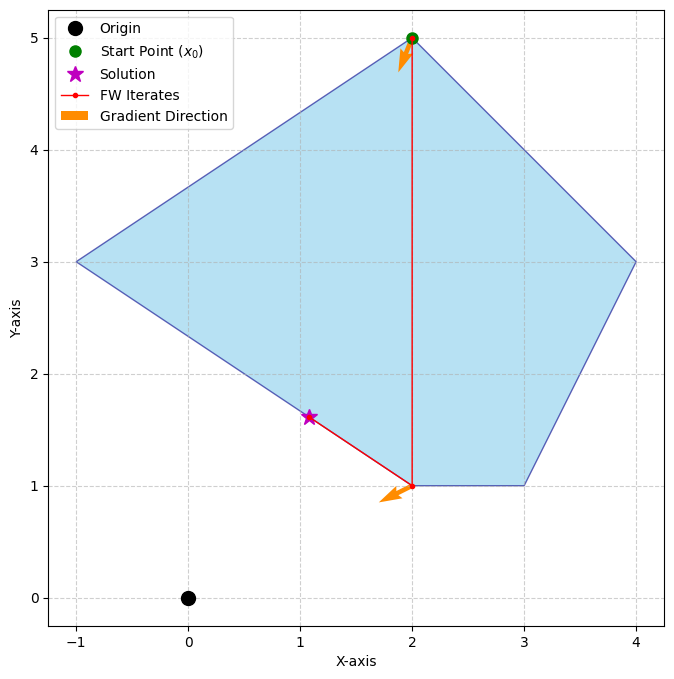
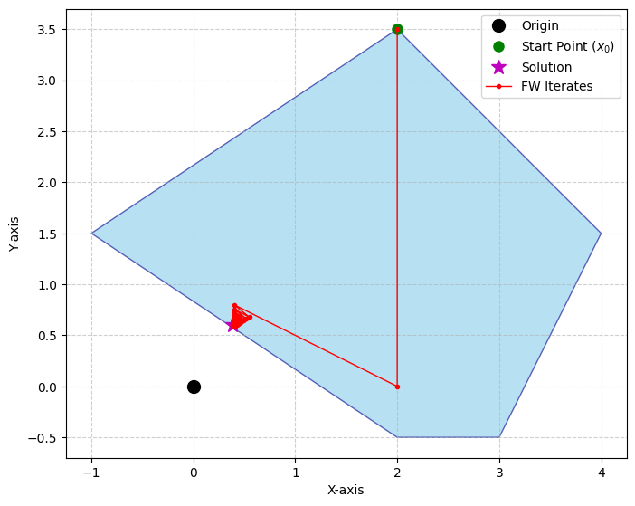

PSA: Collision Detection is an optimization problem and GJK is Frank-Wolfe
A few years ago in 2022 there was a great paper published Collision Detection Accelerated: An Optimization Perspective. From the abstract:
In this work we leverage the fact that collision detection is fundamentally a convex optimization problem. In particular, we establish that the GJK algorithm is a specific sub-case of the well-established Frank-Wolfe (FW) algorithm.
As far as I can tell, the paper was not shared much in the game programming community despite being linked on the GJK Wikipedia page. I have seen almost no discussion or exposition of Frank-Wolfe among game physics programmers. The goal of this blog post is to spread the word. As the authors show, there may still be ways to improve GJK using techniques from optimization.
For the uninitiated, the Gilbert–Johnson–Keerthi (GJK) algorithm is an integral part of most modern video game physics engines and is used to detect when objects collide. It was discovered in 1988, and nowadays all the cool kids use it or some variant as a basis for collision detection, for example, PhysX, Bullet, Chaos, Jolt, and Rubikon. The Frank-Wolfe (FW) algorithm is a general iterative algorithm from the mathematical optimization world used for solving convex problems. The beauty of FW is that it applies to a much broader class of problems and arguably requires less knowledge of geometry. FW was discovered in 1956 and has a delightful history. It’s truly ancient. This is what your grandma used for detecting whether her polytopes intersected. Interestingly, the original GJK paper explicitly states that the GJK algorithm is a descent procedure similar to an algorithm by Wolfe1. It is unclear whether Gilbert, Johnson, or Keerthi2 derived the algorithm from FW or maybe the connection is so trivial to people working in optimization that it is pointless to mention.
In any case, the 2022 paper seems to be the first to show the connection explicitly, but it seems to be a well-known fact in the optimization community. For example, the 2009 paper Coresets for Polytope Distance, notes:
Gilbert’s geometric algorithm … is in fact just an instance of the Frank–Wolfe approximation algorithm for quadratic programs
Later in the same paper:
A variant of Gilbert’s algorithm, the GJK algorithm, is a popular algorithm for collision detection in 3 dimensional space
This is the earliest reference I found, but I would not be surprised if the connection was known since 1988 and simply never shared with game programmers3. Perhaps game physics programmers do know of the connection and are holding out on us. It seems unlikely. In my experience, the pedagogy of GJK is very geometry-centric with the optimization perspective rarely being emphasized4.
Perhaps part of the reason for this geometric focus is that game developers have done a really, really good job at explaining GJK geometrically. Examples include Bergen’s book, Ericson’s book, the infamous presentation by Casey Muratori5, Erin Catto’s talk, and others. Nonetheless, the optimization perspective is clearly valuable, as the 2022 paper demonstrates. If you want another way to understand GJK and the collision detection problem in general, I highly recommend reading the paper. It is very accessible and includes code. The rest of this blog post contains nothing not in the paper, just the points I find most salient.
Deriving GJK From Frank-Wolfe in a Nutshell
Formulate collision detection as a convex optimization problem.
Apply the Frank-Wolfe algorithm, but maintain an active set that is a simplex containing the current iterate. (In the classic FW line-search variant, the active set is just a line.)
Set up the convex optimization problem:
\[\begin{align*} \text{dist}(A, B)^2 &= \begin{array}[t]{ll} \min_{a,b} & \|a-b\|^2 \\ \text{subject to} & a \in A \\ & b \in B \end{array} \\[1em] &= \begin{array}[t]{ll} \min_{x} & \|x\|^2 \\ \text{subject to} & x \in A-B \end{array} \end{align*}\] Pattern matching gives the objective and gradient:
\[\begin{align*} f(x) &= \|x\|^2 \\ \nabla f(x) &= 2x \end{align*}\] The linear subproblem is:
\[\begin{align*} s_k &= \arg\min_{s \in \mathcal{D}} s^T \nabla f(x_k) \\ &= \arg\min_{s \in \mathcal{D}} s^T (2x_k) \\ &= \arg\min_{s \in \mathcal{D}} s^T x_k \\ &= \operatorname{support}_D(-x_k) \end{align*}\] Plugging this into the line-search version of FW, we get Algorithm 3 from the 2022 paper. This is the standard FW line-search, expressed with an active set:
This looks very close to GJK, except that we always project onto a line and discard previous subproblem solutions. This algorithm works well when the origin is far from the feasible set.

When the origin is near the boundary, however, FW begins to zig-zag.

The intuition is hopefully straightforward. Since each line search occurs only between the last iterate (inside the hull) and a vertex, we never reach the boundary. We move along each line until we hit the valley (the minimum of the quadratic restricted to that line). Notice that if we stepped all the way to the boundary (the support point) in the first iteration, the next line search would yield the exact solution (as in Figure 1). This motivates tracking a larger active set: if it included the boundary segment nearest the origin, projecting onto it would give the exact solution.
Including more points in the active set leads to Algorithm 4 from the 2022 paper, which is GJK:
Step 4 corresponds to the GJK step of adding a support point to the simplex.
Steps 5 and 6 correspond to finding the nearest point on the simplex to the origin and checking whether the simplex contains the origin, respectively.
Step 7 is the portion of GJK that reduces the simplex to its boundary containing the closest point.
I find this explanation of GJK far more intuitive (and easier to derive) than the purely geometric one popular online. It requires remembering only a few key ideas. Notice that we didn’t need the Minkowski difference or support functions except as notation, though understanding the geometry certainly helps. If my summary is unclear (highly likely), read the paper until it clicks. The authors explain the concepts very well and provide many useful references on active sets and related history.
Thanks for reading!
If you liked this post, you might like my other post about the Separating Axis Test.
Footnotes
P. Wolfe, “Finding the nearest point in a polytope,” Math. Programming, vol. 11, pp. 128-149, 1976.↩︎
Keerthi is on LinkedIn; maybe someone should ask him :-)↩︎
To be clear, game developers are certainly aware that collision detection of separated shapes is a convex optimization problem, but I have not seen any discussion of FW.
Christer Ericson tweeted that game programmers probably were not aware GJK was derived from FW at the time of writing Real Time Collision Detection.↩︎The classic book Collision Detection in Interactive 3D Environments by Gino van den Bergen does mention it briefly on page 122.↩︎
Casey’s video is so well-regarded that Havok (widely considered the leading physics engine) includes it in its new-hire training.↩︎